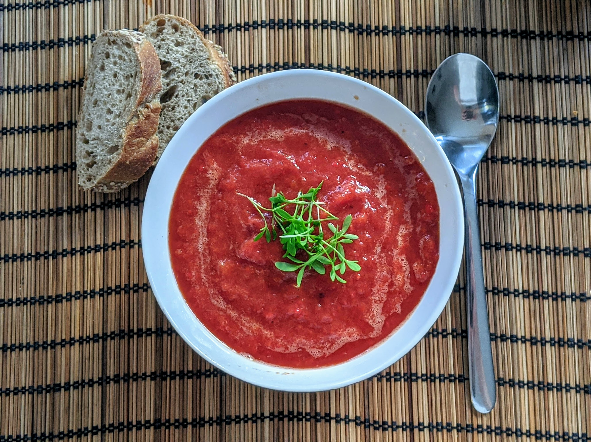

Soupe de poivrons rôtis

Pour 2 personnes :
- Cinq poivrons
- Une boîte (de 400mL) de tomates concassées
- 250mL de bouillon de légumes
- Sel, poivre, bonne huile d'olive
- Faire préchauffer le four à 200°C. Disposer les poivrons sur une plaque de four recouverte de papier sulfurisé ou de papier alu, les faire rôtir 45 minutes en les retournant régulièrement. Il faut que leur peau soit noire un peu partout.
- Les faire refroidir (par exemple dans un sac plastique fermé, ça rend la suite plus facile), puis les éplucher à la main et les épépiner. Essayer de garder le gros jus qui coule quand on fait ça. Pour enlever les derniers pépins, on peut les passer sous l'eau vite fait.
- Mixer la chair des poivrons avec les tomates et le bouillon. Saler, poivrer, et faire chauffer à feu moyen-doux, sans aller jusqu'à ébullition.
- Servir soit chaud soit refroidi, en rectifiant l'assaisonnement sur la fin, et en ajoutant un trait d'huile d'olive juste avant de servir.
Retour à la liste des recettes